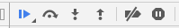
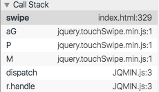
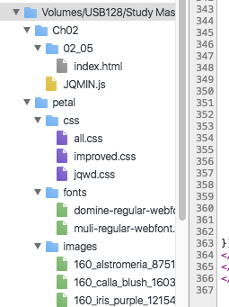
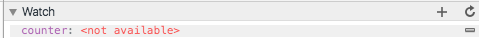

Console API
Breakpoints
Breakpoints remain on reload of the page.
I could even edit my code and the breakpoint will move
(or 'follow') the line down the page and remain attached
to that executable line.
You can even set breakpoints in your code with...
debugger;
Breakpoint Variations
- Conditional
- Hardcoded
- DOM (in elements tab)
- XHR (for ajax)
- Event Listener
For instance you can have a
Conditional Breakpoint:
Right now, in the debugger: rt-click and edit a B-point
console.log("this is the"); c > a
Because c > a is false, it wont stop.
Next, @ log line, edit a TRUE condition:
console.log("end of the program"); a > c
Because a is greater than c it will stop
and not execute it's line.
This is also achieved with:
if (a > c) { // true
debugger;
}
Listener events like
click events--wont "break" any time there's a click--
They will 'activate' any time .js is triggered by a mouseclick.
Pause on exceptions
Often, .js can 'fail silently' and produce errors but NOT BREAK THE CODE
entirely. This can also happen with hard-coded "try-catch" exception handling.
there is a pause button to the right in the debugger.
"Pause on Exceptions".
Click this button to alert you to "quiet errors" in your code.
[ lyn debug: chs~~>2.04]
ch 2.5 STEPPING
pause | stepover | into | outof | disable | Exceptions

Step Over --> Steps to next executable line.
Step into --> inside the function call.
Step out --> executes everything it needs to in order to
get out of whatever function call you're in.
rt-click "continue to here" is like a quasi-breakpoint
clicking the "{}" @ bottom of debugger does a pretty-print
(if you were lost in a rabbit hole of a minified file)
ch 2.6 CALLSTACK
list of
fn that have been called to get you to where you are.

Step Over --> Steps to next executable line.
Step into --> inside the function call.
Step out --> executes everything it needs to in order to
get out of whatever function call you're in.
rt-click "continue to here" is like a quasi-breakpoint
clicking the "{}" @ bottom of debugger does a pretty-print
(if you were lost in a rabbit hole of a minified file)
HOT TIP:
Option Click the arrow beside folder in sources panel.
Automagically view everything!

Renaming anon-fns is really helpful to orient your self in the callstack.
Every time you step into a
fn it is added to the top
of the callstack.
You can click each Callback in the panel.
They each are referred to as a "frame".
As you click you can check the values of your local variables in each "frame".
Ch2.7 Watches
Any expression is possible.
These are OFTEN used to monitor variables that may change.
You can also modify any variable in code for example
someArray.pop();
as a watch expression.

Extra (non-Lynda notes)
innerbox Class
Mango div
redlite Code
hilite1 div =true white?
hilite2 div
blLite
reddrk
wh text (off-white)
h1 Ans hidden below
txtbox
Txtbox2
txtbox3
innerbox class
testbox class
compact class
compact-w in h1
innerbox div
innerbox2 div
innerbox3 div
innerbox4 div
greyBox